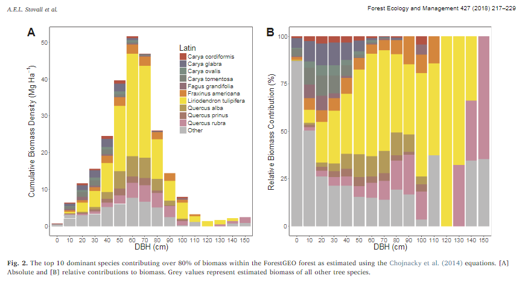

Chapter 4 Carbon Cycling
Forests make up 45% of terrestrial carbon (bonan_forests_2008; Stovall, Anderson-Teixeira, and Shugart 2018). The amount of carbon held in by trees can have a negative impact due to the emissions that are released into the air caused by deforestation. The rise in carbon emissions is attributed to the rise in tree mortality.
from core census– all of the following, for whole forest and by size/ species, potentially in and out of deer exclosure - biomass - write (or find?) code to make graph as this one in (Stovall, Anderson-Teixeira, and Shugart 2018) 
- ANPP_stem (and potentially its climate sensitivity, from cores)
- woody mortality
- downed woody debris
other data - litter production? - anything from NEON?
References
Stovall, Atticus E. L., Kristina J. Anderson-Teixeira, and Herman H. Shugart. 2018. “Assessing Terrestrial Laser Scanning for Developing Non-Destructive Biomass Allometry.” Forest Ecology and Management 427 (November): 217–29. https://doi.org/10.1016/j.foreco.2018.06.004.